O Pub
Da união de duas paixões nasceu o Sonzera Beer Pub: cerveja artesanal e música! Aqui, na primeira cervejaria artesanal de Mongaguá, você encontra uma grande variedade de chopps de produção própria, porções únicas e lanches assinados, drinks alternativos e exclusivos, música ao vivo aos finais de semana, além de um ambiente climatizado, familiar e acolhedor.
Horários
Nosso funcionamento é de terça-feira a sábado, a partir das 17h. Fique por dentro dos eventos, novidades
e promoções acessando nosso Instagram:
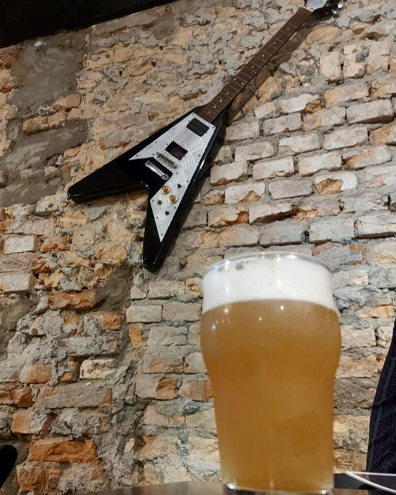
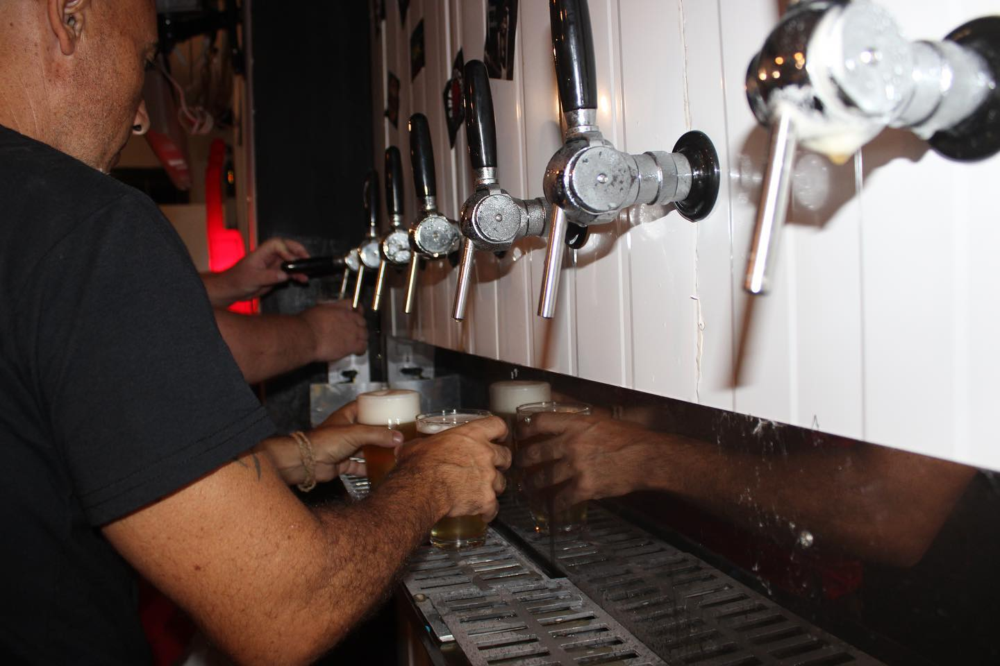
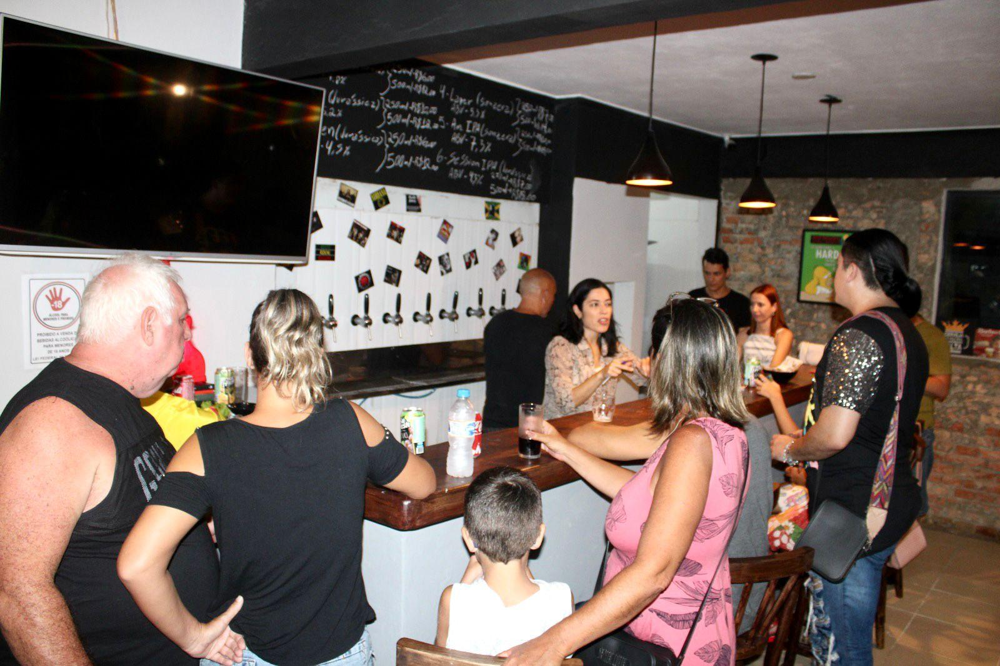
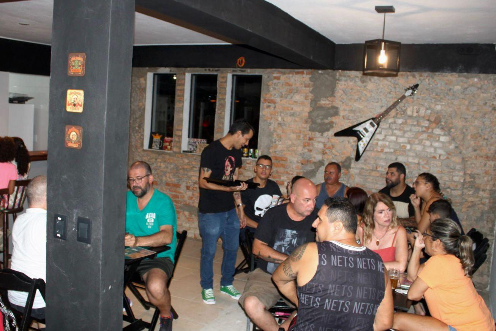
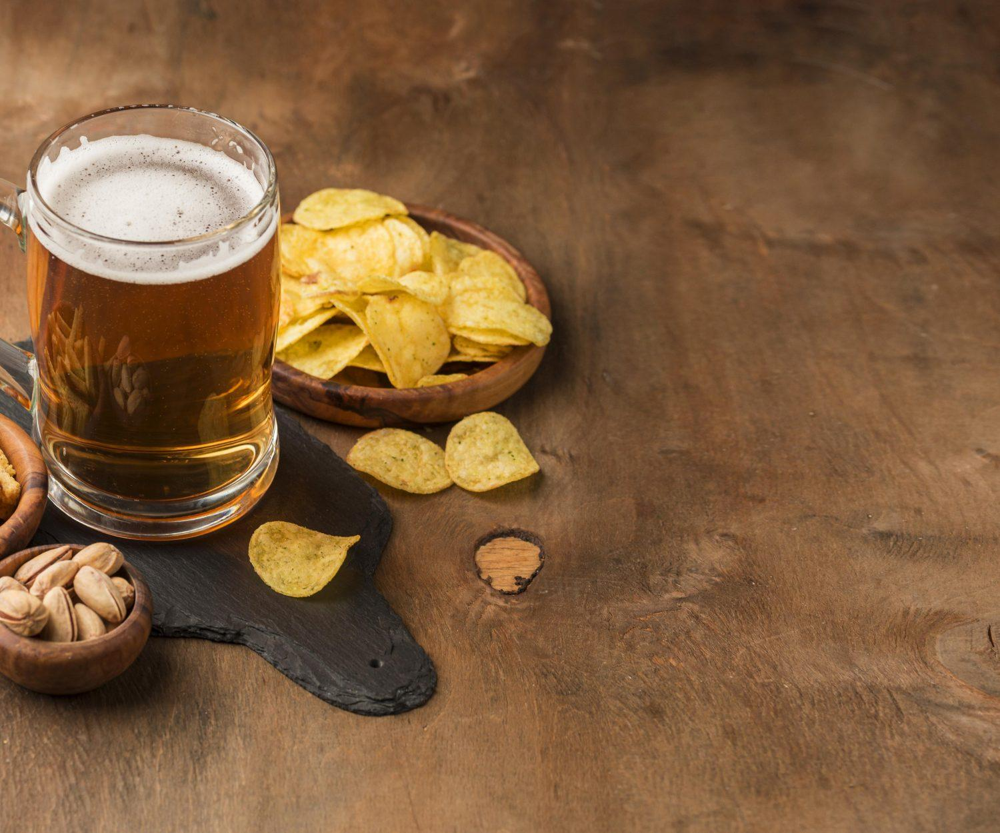
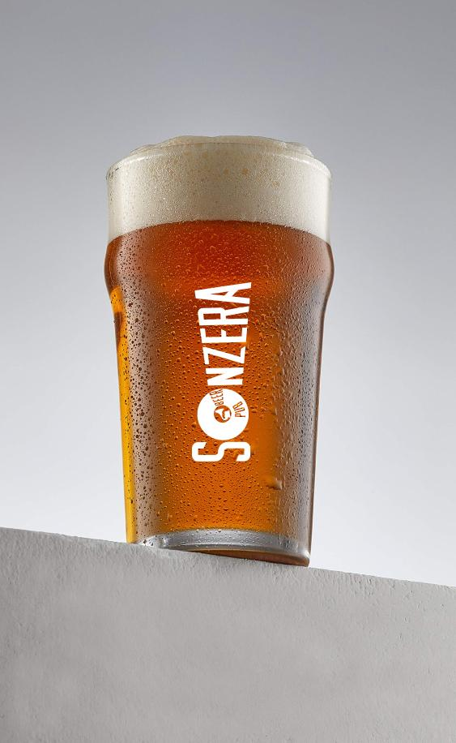
Cervejas
Uma TAP com personalidade.
Nossa TAP tem, atualmente, nove bicos onde se revezam os mais diversos estilos de cervejas artesanais autorais. A cada mês temos novidades!
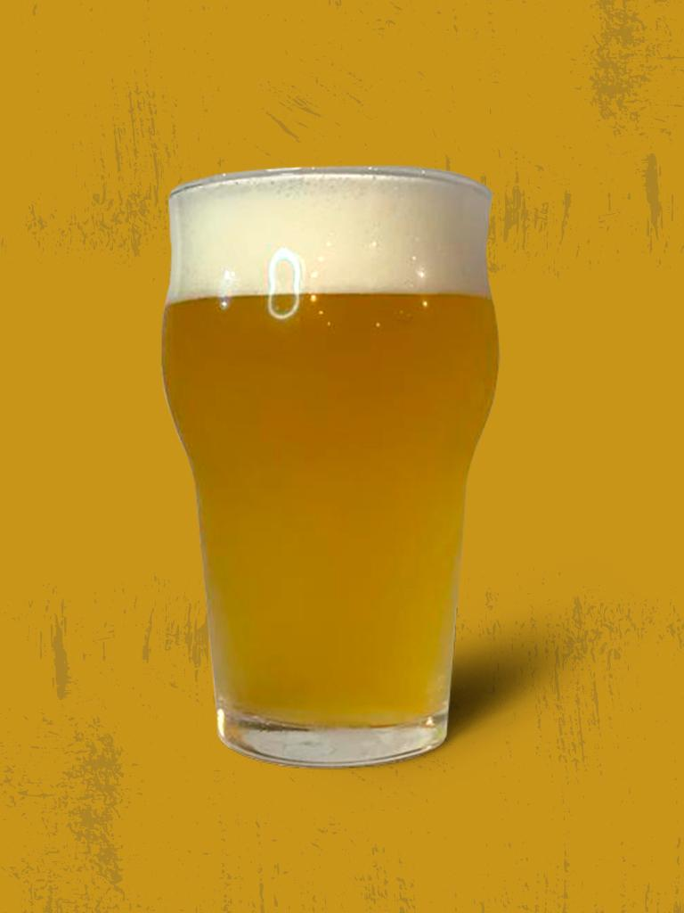
Pilsen
A Pilsen Sonzera é triplo malte, tem cor dourada, sabor equilibrado com baixo amargor, conferindo uma drinkability suave até para os apreciadores de pilsen mais exigentes. ABV 5% / IBU 16.
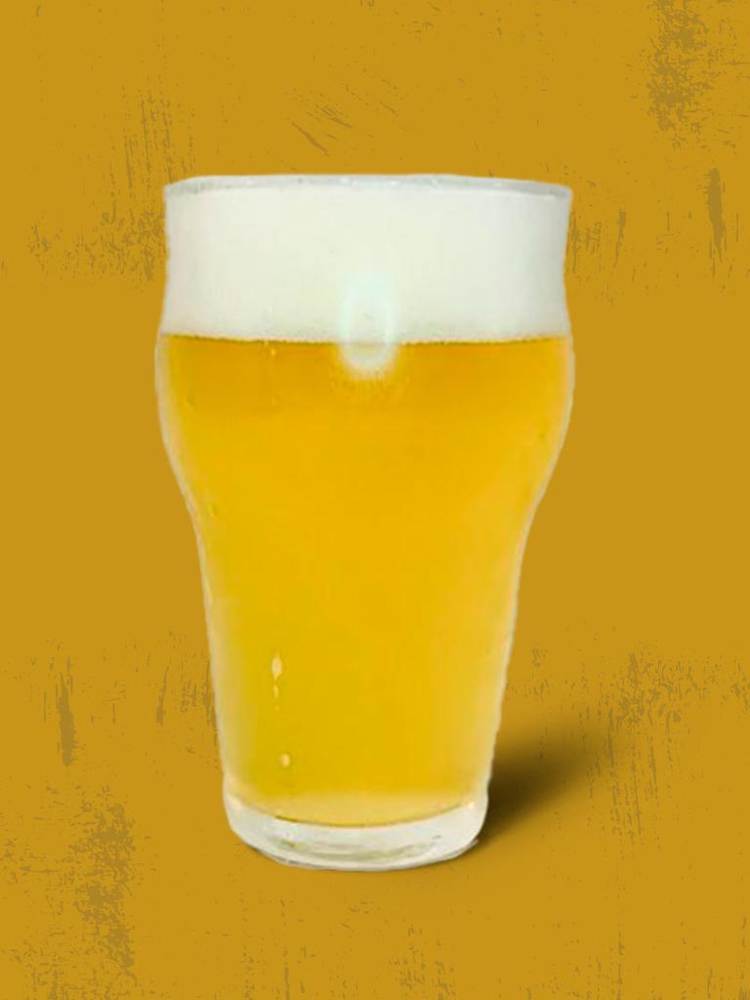
Lager Premium
Nossa Lager Premium é uma triplo malte com sabor sem igual. Um chopp claro, leve e com baixíssimo amargor e característica maltada marcante. ABV 5,3% / IBU 14.
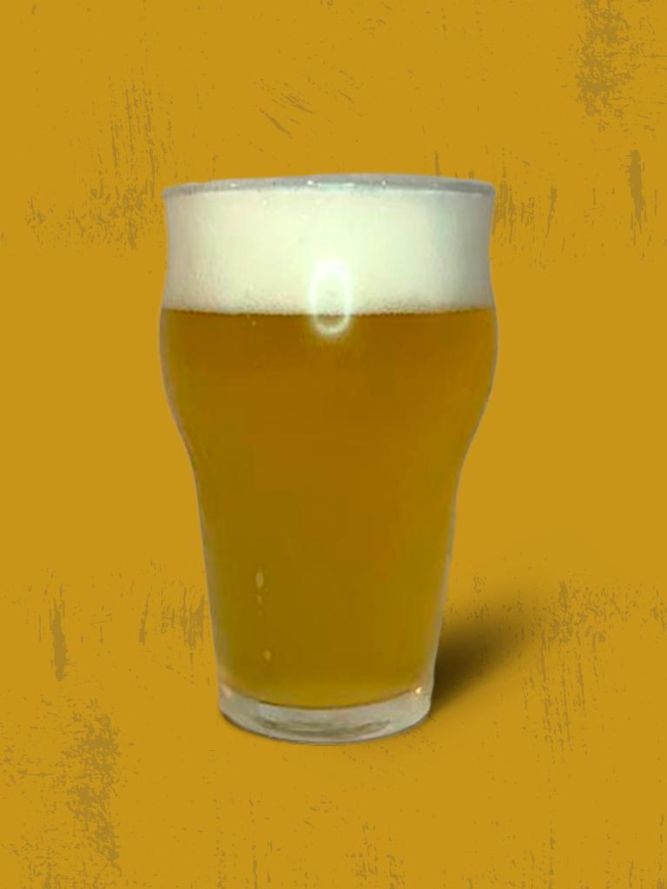
Cream Ale
A Cream Ale Sonzera é leve, refrescante e tem sabor suave. Possui cor dourada clara e uma carbonatação moderada. ABV 5,1% / IBU 15.
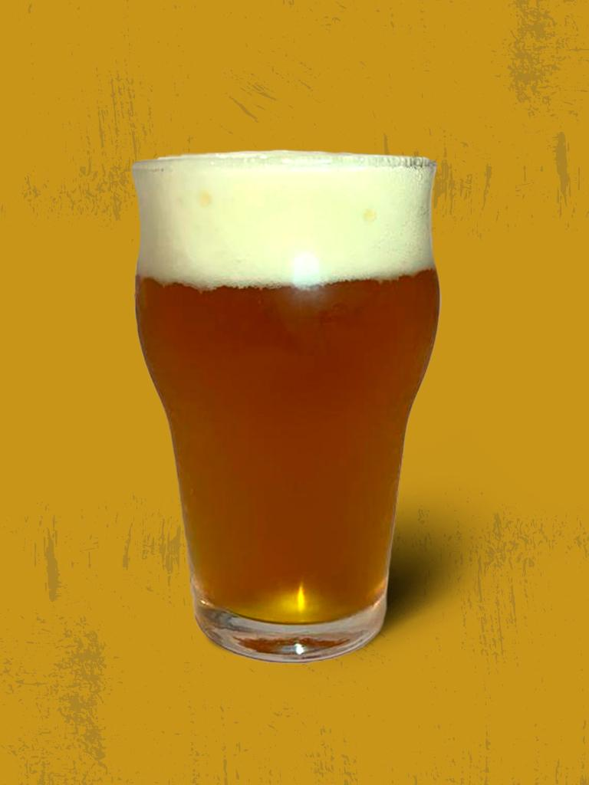
American Pale Ale
A APA Sonzera tem características equilibradas e sabores cítricos e frutados provenientes do lúpulo. Tem coloração âmbar, teor alcoólico moderado e amargor perceptível. ABV 6,1% / IBU 49,4.
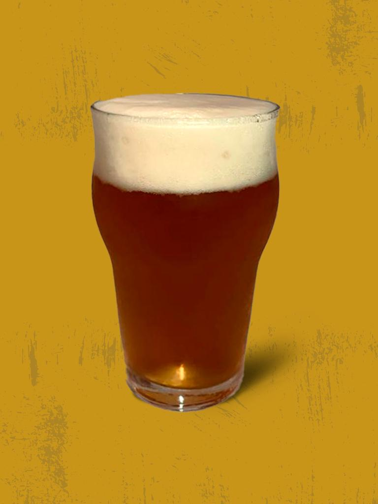
American IPA
Lúpulos em grandes quantidades são a marca registrada da nossa American IPA. Frutada, terrosa, maltada e intensa, harmoniza com alimentos fortes e condimentados. ABV 7,3% / IBU 69.
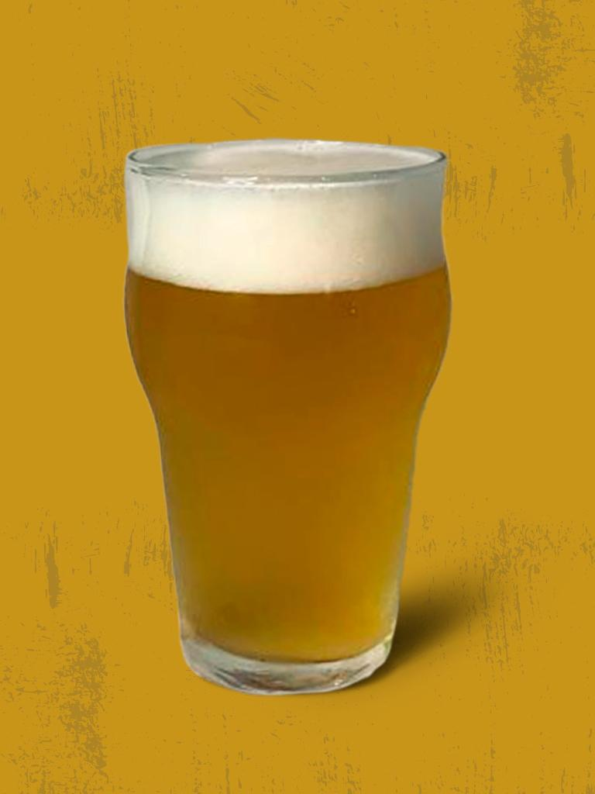
Ohanalu – Session IPA
Uma IPA leve, de baixo amargor, mas com aroma frutado e levemente cítrico. Desenvolvida especialmente para o Hostel Ohanalu. ABV 4,4% / IBU 28,6.
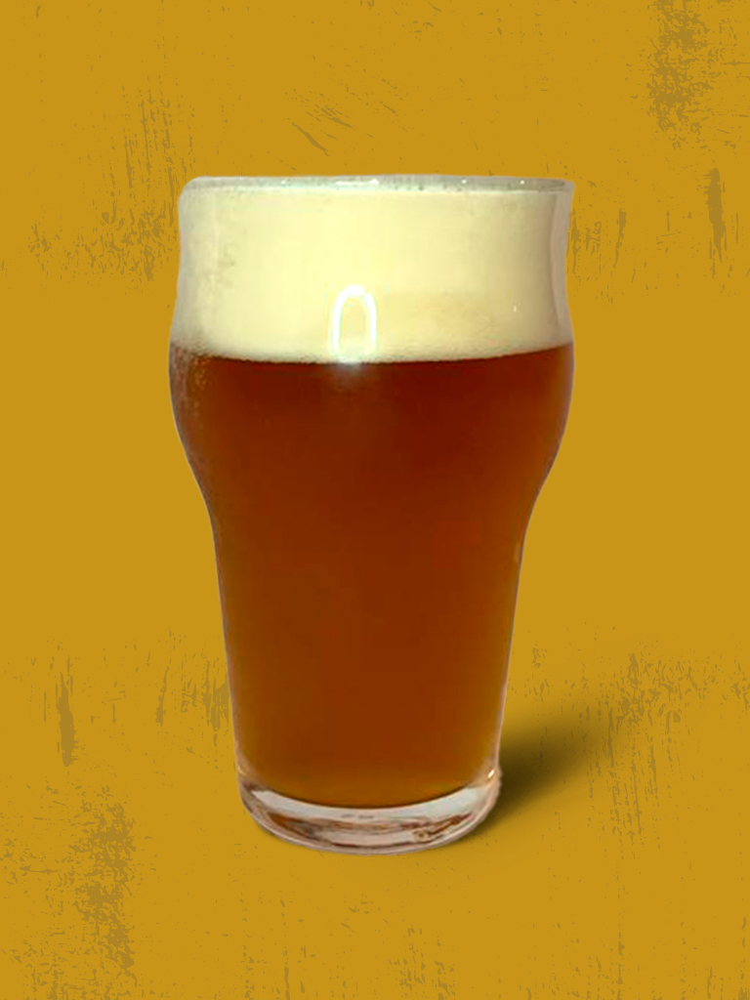
English Pale Ale
O equilíbrio perfeito entre o malte e o lúpulo, com notas de caramelo, frutas, herbal e terroso. ABV 6% / IBU 37.
Rádio Sonzera
A trilha sonora da casa.
Como o próprio nome do pub já entrega, a música é parte importante da nossa essência. Ouça a seleção do Sonzera, descubra novos sons e deixe a trilha da casa acompanhar o seu momento.
Delivery
Em breve, na sua casa.
Em breve, entregaremos a cerveja mais saborosa de Mongaguá em sua casa.
Contato
Contato
(13) 97801-8904
sonzerabeerpub@gmail.com
Horários
De terça a sábado, abertura às 17h.
Endereço
Avenida Olindo Tamagnini, 155, Centro – Mongaguá/SP
@sonzerabeerpub